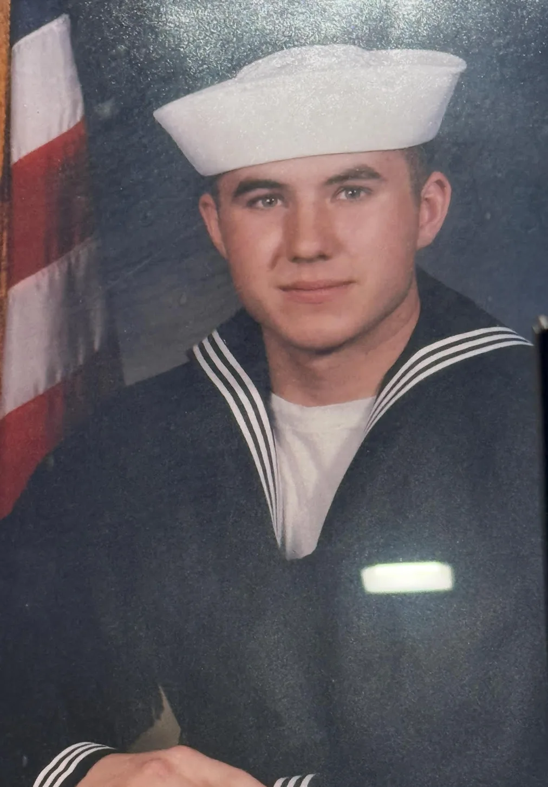
U.S. Navy service timeline
1996–1998 · Naval Air Station Fallon, Nevada
I was stationed at NAS Fallon from 1996 to 1998. I arrived in 1996, the year the Navy moved TOPGUN from NAS Miramar to Fallon. I also took part in the response to the 1997 Truckee River flood and received the Humanitarian Service Medal.
Read about my Fallon assignment and see the station emblem and aircraft photos.
1998–1999 · VP-40 Fighting Marlins in Japan
After Fallon, I joined Patrol Squadron 40 (VP-40) at NAS Whidbey Island, Washington. On the December 1998 to June 1999 deployment, I went first to Naval Air Facility Misawa in northern Japan, then to Kadena Air Base in Okinawa. Our squadron flew P-3C Orion maritime patrol aircraft.
See the Misawa and Kadena deployment account and Navy aircraft photos.
2000 · Bahrain and Diego Garcia
During my time with the Fighting Marlins, I was sent to Bahrain and Diego Garcia. The squadron flew maritime patrol and surveillance missions in the region.
Explore VP-40’s Bahrain deployment and the squadron’s 2000 history.
Military honors and recognition
Navy Good Conduct Award
In a photograph from his military service, Kay is shown in uniform holding his U.S. Navy Good Conduct Award certificate.
View the Navy Good Conduct Award ceremony photo
Junior Sailor of the Quarter and Humanitarian Service Medal
VP-40 recognized Kay as Junior Sailor of the Quarter in 1999. He also received the Humanitarian Service Medal for his role in the response to the 1997 Truckee River flood.
Navy and Marine Corps Achievement Medal
My 2000 citation recognizes my work maintaining VP-40’s technical publications library. The citation, commendations, and Junior Sailor of the Quarter plaque are in the photo and document archive.
Explore Kay’s military service and recognition in his executive portfolio
From Navy career counseling to recruiting
As an Associate Command Career Counselor, Kay helped sailors think through training opportunities and career decisions. He carries that approach into executive recruiting and talent acquisition by listening to candidates, explaining what a role requires, and following up on open questions.
Read Kay’s article on leadership, recruiting, and building stronger teams
Bahrain in 2000 and the USS Cole response
Gulf Air Flight 072 crashed near Bahrain in August 2000. In October, a VP-40 aircrew delivered supplies and support personnel to Aden after the bombing of USS Cole.
Navy photos and military recognition
Select an image to view it at full size.
U.S. Navy service and VP-40

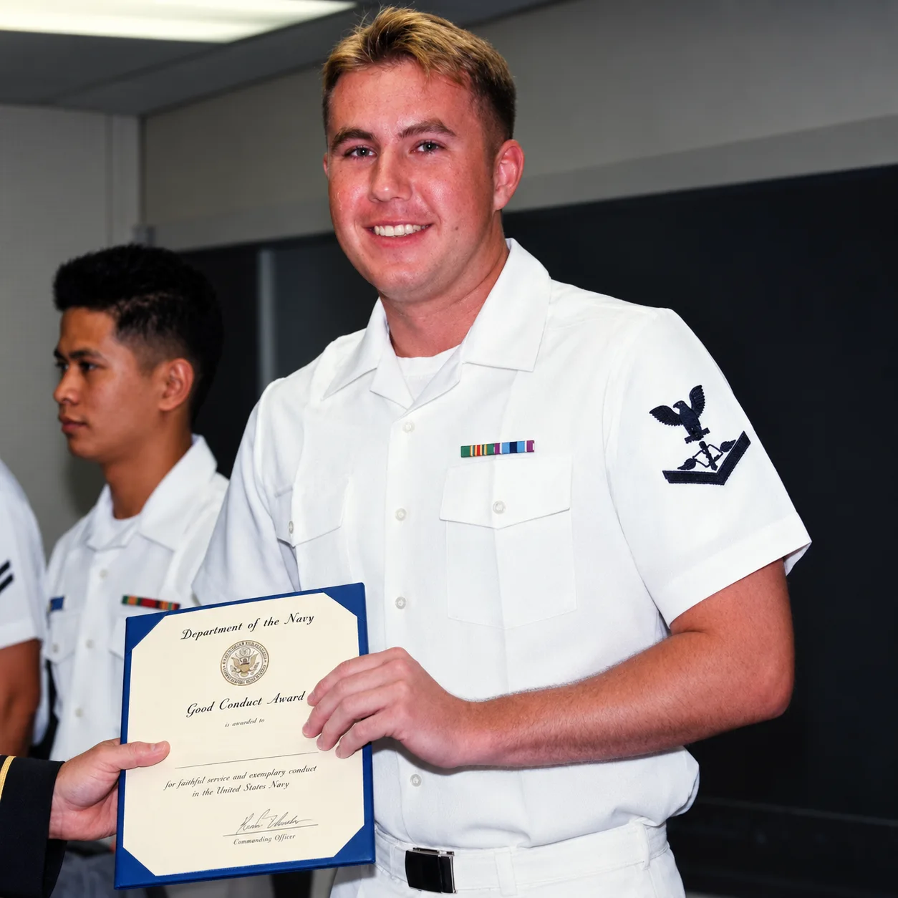

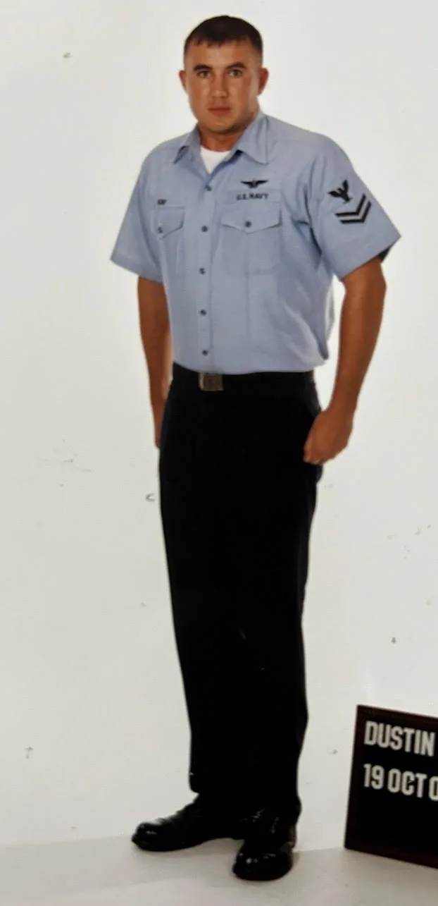

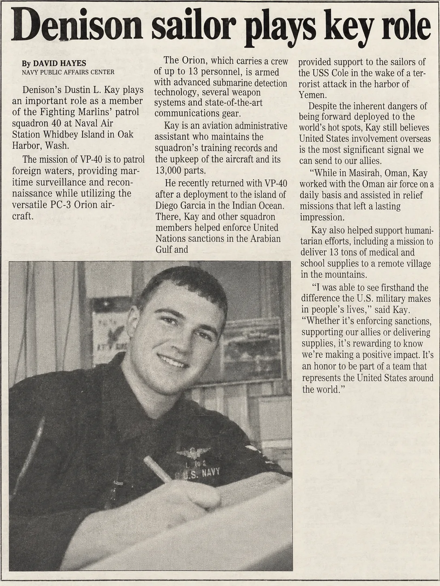
Awards, commendations, and humanitarian service

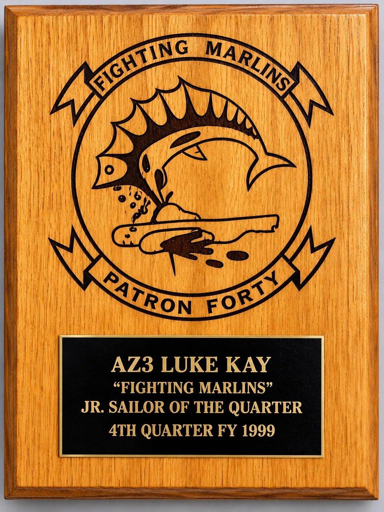

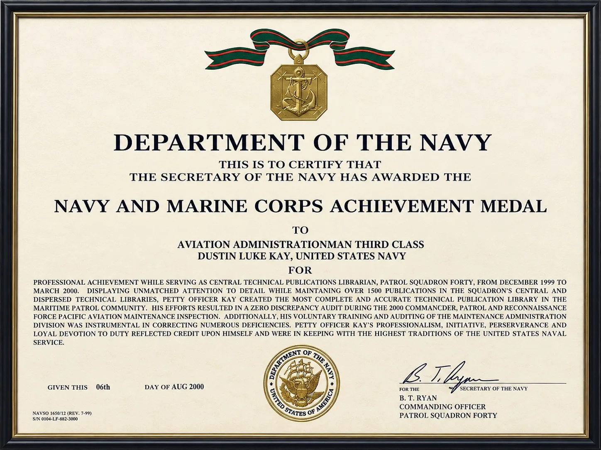

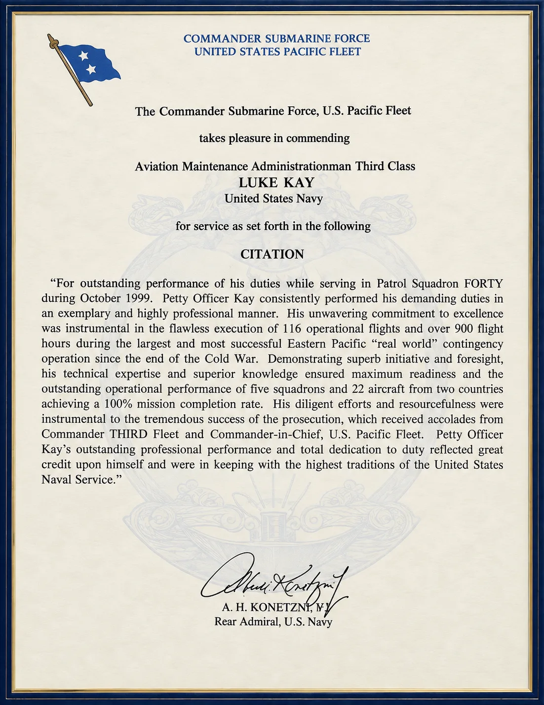

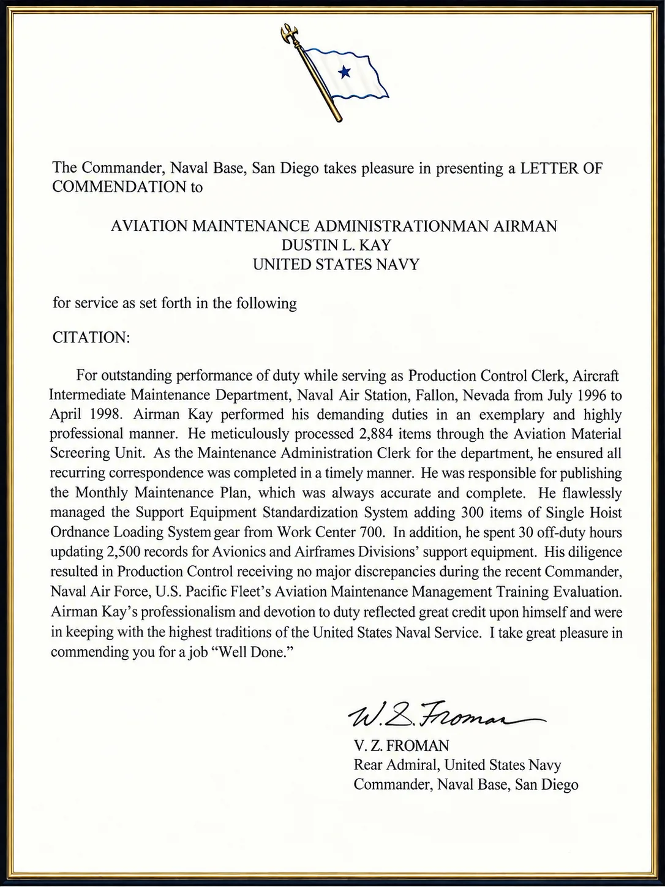

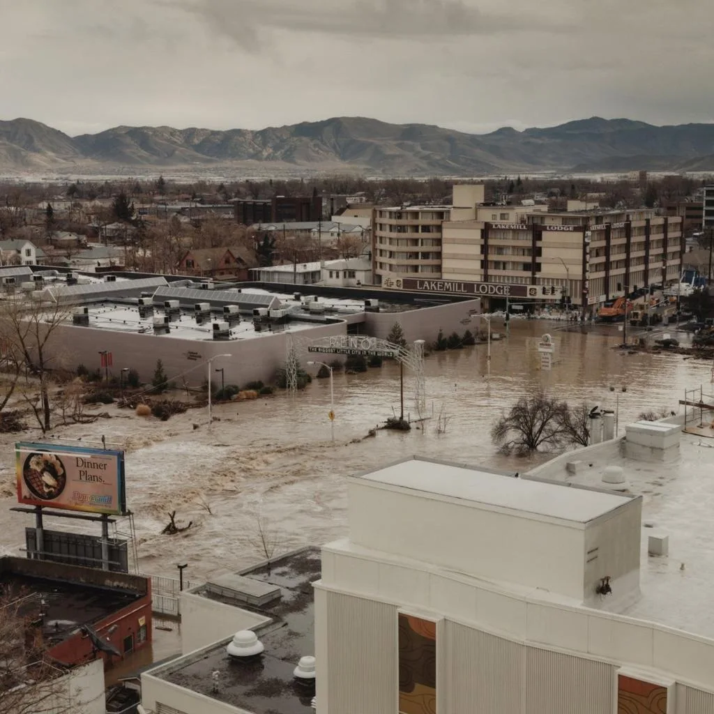

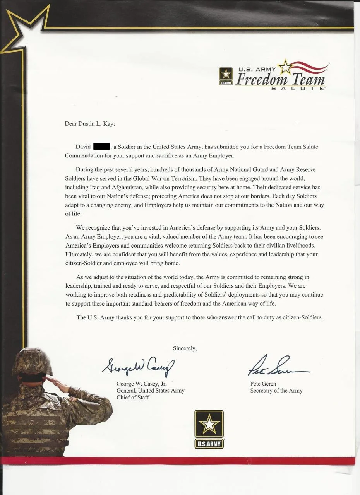
Recruiting career and office portraits

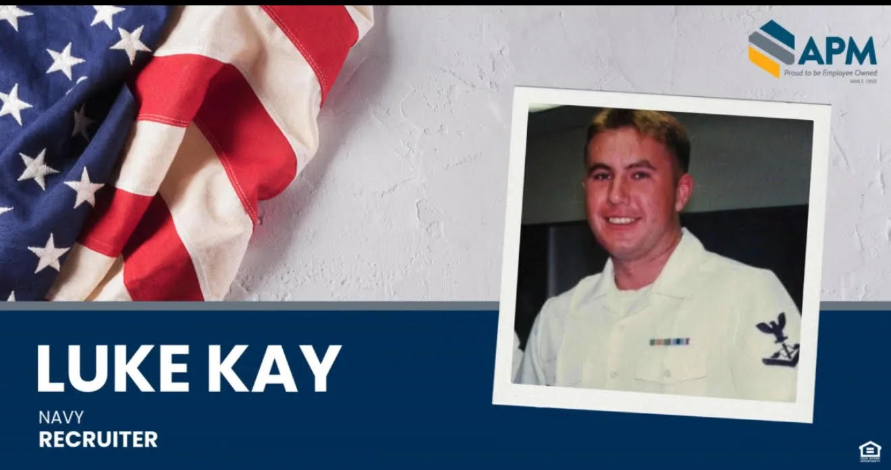

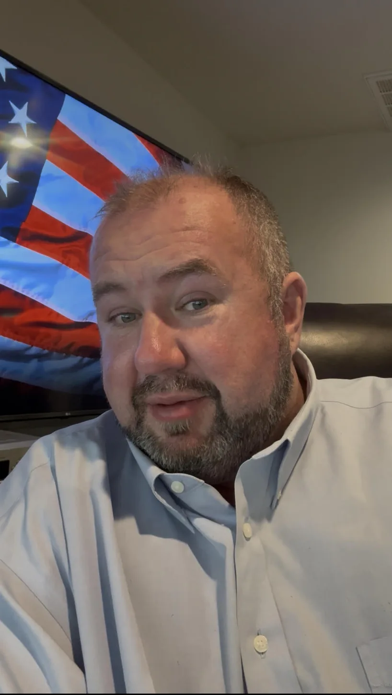

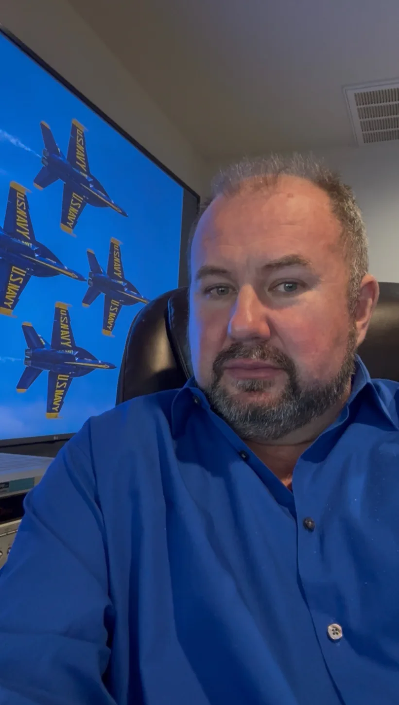